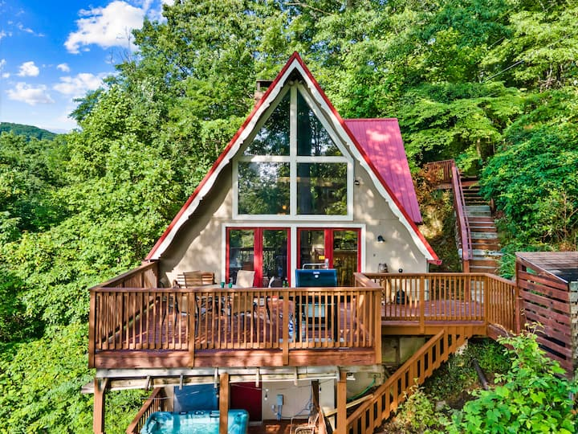
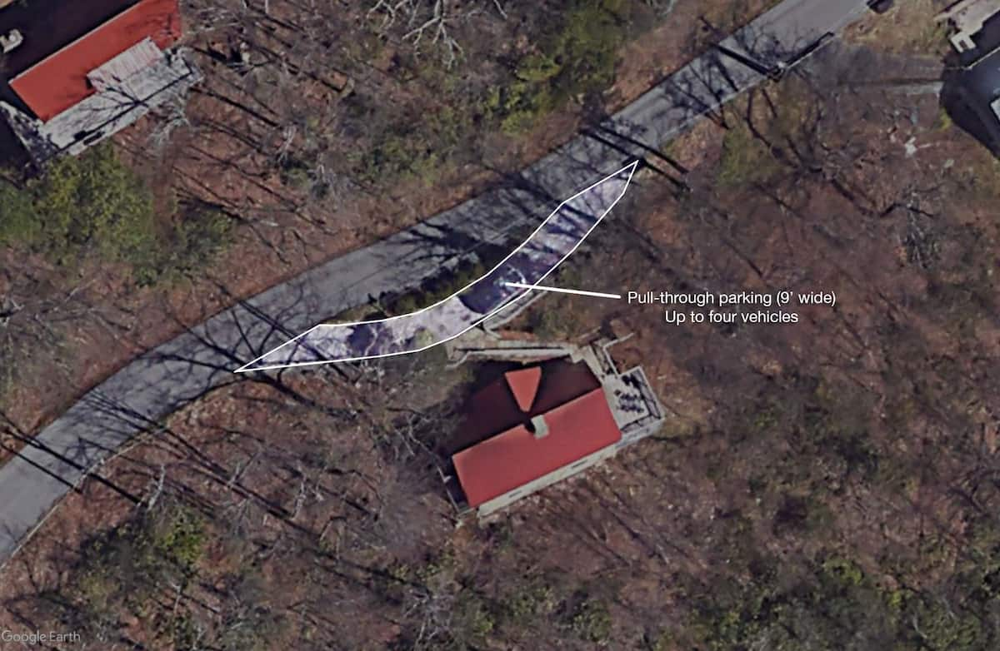

Arrival Information
1125 Lower Alpine Way Gatlinburg, TN


Bear Ridge Cabin is nestled among some of the most pristine and scenic views the Smokies and Gatlinburg have to offer. Styled with warm colors and casual mountain decor this 3 level classic mountain A-frame is ideal for couples or a multi-generational family with bedrooms on each level for privacy.
The easiest way to navigate is by clicking "View larger map" on the map below. This will open google maps. Simply click "get directions". It will open Google Maps and the end point (the house) will be filled in. You simply need to type in your starting point.
If you prefer not to rely on technology, then here is a step by step version.
← Turn left onto US-129 N.
↗ Exit onto TN-168 E toward Tennessee Scenic Pkwy.
↑ Merge onto TN-168 E.
← Turn left onto W Norton Rd.
↑ Continue straight onto US-441 S.
Take River Divide Rd to US-441 S/Parkway in Pigeon Forge.
↗ Follow US-441 S/Parkway to Gatlinburg Bypass in Gatlinburg. Take the exit toward National Park from US-441 S/Parkway.
↗ Continue on Gatlinburg Bypass. Take Campbell Lead Rd and Ski Mountain Rd to Lower Alpine Way.